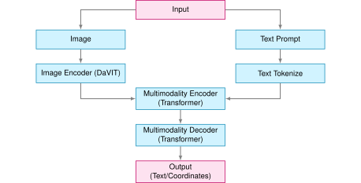

Vision-Language Models (VLM)

Introduction
In this hands-on lab, we will continuously explore AI applications at the Edge, from the basic setup of the Florence-2, Microsoft’s state-of-the-art vision foundation model, to advanced implementations on devices like the Raspberry Pi. We will learn to use Vision-Languageor Models (VLMs) for tasks such as captioning, object detection, grounding, segmentation, and OCR on a Raspberry Pi.
Why Florence-2 at the Edge?
Florence-2 is a vision-language model open-sourced by Microsoft under the MIT license, which significantly advances vision-language models by combining a lightweight architecture with robust capabilities. Thanks to its training on the massive FLD-5B dataset, which contains 126 million images and 5.4 billion visual annotations, it achieves performance comparable to larger models. This makes Florence-2 ideal for deployment at the edge, where power and computational resources are limited.
In this tutorial, we will explore how to use Florence-2 for real-time computer vision applications, such as:
- Image captioning
- Object detection
- Segmentation
- Visual grounding
Visual grounding involves linking textual descriptions to specific regions within an image. This enables the model to understand where particular objects or entities described in a prompt are in the image. For example, if the prompt is “a red car,” the model will identify and highlight the region where the red car is found in the image. Visual grounding is helpful for applications where precise alignment between text and visual content is needed, such as human-computer interaction, image annotation, and interactive AI systems.
In the tutorial, we will walk through:
- Setting up Florence-2 on the Raspberry Pi
- Running inference tasks such as object detection and captioning
- Optimizing the model to get the best performance from the edge device
- Exploring practical, real-world applications with fine-tuning.
Florence-2 Model Architecture
Florence-2 utilizes a unified, prompt-based representation to handle various vision-language tasks. The model architecture consists of two main components: an image encoder and a multi-modal transformer encoder-decoder.
Image Encoder: The image encoder is based on the DaViT (Dual Attention Vision Transformers) architecture. It converts input images into a series of visual token embeddings. These embeddings serve as the foundational representations of the visual content, capturing both spatial and contextual information about the image.
Multi-Modal Transformer Encoder-Decoder: Florence-2’s core is the multi-modal transformer encoder-decoder, which combines visual token embeddings from the image encoder with textual embeddings generated by a BERT-like model. This combination allows the model to simultaneously process visual and textual inputs, enabling a unified approach to tasks such as image captioning, object detection, and segmentation.
The model’s training on the extensive FLD-5B dataset ensures it can effectively handle diverse vision tasks without requiring task-specific modifications. Florence-2 uses textual prompts to activate specific tasks, making it highly flexible and capable of zero-shot generalization. For tasks like object detection or visual grounding, the model incorporates additional location tokens to represent regions within the image, ensuring a precise understanding of spatial relationships.
Florence-2’s compact architecture and innovative training approach allow it to perform computer vision tasks accurately, even on resource-constrained devices like the Raspberry Pi.
Technical Overview
Florence-2 introduces several innovative features that set it apart:
Architecture

- Lightweight Design: Two variants available
- Florence-2-Base: 232 million parameters
- Florence-2-Large: 771 million parameters
- Unified Representation: Handles multiple vision tasks through a single architecture
- DaViT Vision Encoder: Converts images into visual token embeddings
- Transformer-based Multi-modal Encoder-Decoder: Processes combined visual and text embeddings
Training Dataset (FLD-5B)

- 126 million unique images
- 5.4 billion comprehensive annotations, including:
- 500M text annotations
- 1.3B region-text annotations
- 3.6B text-phrase-region annotations
- Automated annotation pipeline using specialist models
- Iterative refinement process for high-quality labels
Key Capabilities
Florence-2 excels in multiple vision tasks:
Zero-shot Performance
- Image Captioning: Achieves 135.6 CIDEr score on COCO
- Visual Grounding: 84.4% recall@1 on Flickr30k
- Object Detection: 37.5 mAP on COCO val2017
- Referring Expression: 67.0% accuracy on RefCOCO
Fine-tuned Performance
- Competitive with specialist models despite the smaller size
- Outperforms larger models in specific benchmarks
- Efficient adaptation to new tasks
Practical Applications
Florence-2 can be applied across various domains:
- Content Understanding
- Automated image captioning for accessibility
- Visual content moderation
- Media asset management
- E-commerce
- Product image analysis
- Visual search
- Automated product tagging
- Healthcare
- Medical image analysis
- Diagnostic assistance
- Research data processing
- Security & Surveillance
- Object detection and tracking
- Anomaly detection
- Scene understanding
Comparing Florence-2 with other VLMs
Florence-2 stands out from other visual language models due to its impressive zero-shot capabilities. Unlike models like Google PaliGemma, which rely on extensive fine-tuning to adapt to various tasks, Florence-2 works right out of the box, as we will see in this lab. It can also compete with larger models like GPT-4V and Flamingo, which often have many more parameters but only sometimes match Florence-2’s performance. For example, Florence-2 achieves better zero-shot results than Kosmos-2 despite having over twice the parameters.
In benchmark tests, Florence-2 has shown remarkable performance in tasks like COCO captioning and referring expression comprehension. It outperformed models like PolyFormer and UNINEXT in object detection and segmentation tasks on the COCO dataset. It is a highly competitive choice for real-world applications where both performance and resource efficiency are crucial.
Setup and Installation
Our choice of edge device is the Raspberry Pi 5 (Raspi-5). Its robust platform is equipped with the Broadcom BCM2712, a 2.4 GHz quad-core 64-bit Arm Cortex-A76 CPU featuring Cryptographic Extension and enhanced caching capabilities. It boasts a VideoCore VII GPU, dual 4Kp60 HDMI® outputs with HDR, and a 4Kp60 HEVC decoder. Memory options include 4 GB and 8 GB of high-speed LPDDR4X SDRAM, with 8 GB being our choice to run Florence-2. It also features expandable storage via a microSD card slot and a PCIe 2.0 interface for fast peripherals such as M.2 SSDs (Solid State Drives).
For real applications, SSDs are a better option than SD cards.
We suggest installing an Active Cooler, a dedicated clip-on cooling solution for Raspberry Pi 5 (Raspi-5), for this lab. It combines an aluminum heatsink with a temperature-controlled blower fan to keep the Raspi-5 operating comfortably under heavy loads, such as running Florense-2.

Environment configuration
To run Microsoft Florense-2 on the Raspberry Pi 5, we’ll need a few libraries:
- Transformers:
- Florence-2 uses the
transformerslibrary from Hugging Face for model loading and inference. This library provides the architecture for working with pre-trained vision-language models, making it easy to perform tasks like image captioning, object detection, and more. Essentially,transformershelps in interacting with the model, processing input prompts, and obtaining outputs.
- Florence-2 uses the
- PyTorch:
- PyTorch is a deep learning framework that provides the infrastructure needed to run the Florence-2 model, which includes tensor operations, GPU acceleration (if a GPU is available), and model training/inference functionalities. The Florence-2 model is trained in PyTorch, and we need it to leverage its functions, layers, and computation capabilities to perform inferences on the Raspberry Pi.
- Timm (PyTorch Image Models):
- Florence-2 uses
timmto access efficient implementations of vision models and pre-trained weights. Specifically, thetimmlibrary is utilized for the image encoder part of Florence-2, particularly for managing the DaViT architecture. It provides model definitions and optimized code for common vision tasks and allows the easy integration of different backbones that are lightweight and suitable for edge devices.
- Florence-2 uses
- Einops:
Einopsis a library for flexible and powerful tensor operations. It makes it easy to reshape and manipulate tensor dimensions, which is especially important for the multi-modal processing done in Florence-2. Vision-language models like Florence-2 often need to rearrange image data, text embeddings, and visual embeddings to align correctly for the transformer blocks, andeinopssimplifies these complex operations, making the code more readable and concise.
In short, these libraries enable different essential components of Florence-2:
- Transformers and PyTorch are needed to load the model and run the inference.
- Timm is used to access and efficiently implement the vision encoder.
- Einops helps reshape data, facilitating the integration of visual and text features.
All these components work together to help Florence-2 run seamlessly on our Raspberry Pi, allowing it to perform complex vision-language tasks relatively quickly.
Considering that the Raspberry Pi already has its OS installed, let’s use SSH to reach it from another computer:
ssh mjrovai@raspi-5.localAnd check the IP allocated to it:
hostname -I192.168.4.209

Updating the Raspberry Pi
First, ensure your Raspberry Pi is up to date:
sudo apt update
sudo apt upgrade -yInitial setup for using PIP:
sudo apt install python3-pip
sudo rm /usr/lib/python3.11/EXTERNALLY-MANAGED
pip3 install --upgrade pipInstall Dependencies
sudo apt-get install libjpeg-dev libopenblas-dev libopenmpi-dev \
libomp-devLet’s set up and activate a Virtual Environment for working with Florence-2:
python3 -m venv ~/florence
source ~/florence/bin/activateInstall PyTorch
pip3 install setuptools numpy Cython
pip3 install requests
pip3 install torch torchvision \
--index-url https://download.pytorch.org/whl/cpu
pip3 install torchaudio \
--index-url https://download.pytorch.org/whl/cpuLet’s verify that PyTorch is correctly installed:

Install Transformers, Timm and Einops:
pip3 install transformers
pip3 install timm einopsInstall the model:
pip3 install autodistill-florence-2Jupyter Notebook and Python libraries
Installing a Jupyter Notebook to run and test our Python scripts is possible.
pip3 install jupyter
pip3 install numpy Pillow matplotlib
jupyter notebook --generate-configTesting the installation
Running the Jupyter Notebook on the remote computer
jupyter notebook --ip=192.168.4.209 --no-browserRunning the above command on the SSH terminal, we can see the local URL address to open the notebook:

The notebook with the code used on this initial test can be found on the Lab GitHub:
We can access it on the remote computer by entering the Raspberry Pi’s IP address and the provided token in a web browser (copy the entire URL from the terminal).
From the Home page, create a new notebook [Python 3 (ipykernel) ] and copy and paste the example code from Hugging Face Hub.
The code is designed to run Florence-2 on a given image to perform object detection. It loads the model, processes an image and a prompt, and then generates a response to identify and describe the objects in the image.
- The processor helps prepare text and image inputs.
- The model takes the processed inputs to generate a meaningful response.
- The post-processing step refines the generated output into a more interpretable form, like bounding boxes for detected objects.
This workflow leverages the versatility of Florence-2 to handle vision-language tasks and is implemented efficiently using PyTorch, Transformers, and related image-processing tools.
import requests
from PIL import Image
import torch
from transformers import AutoProcessor, AutoModelForCausalLM
device = "cuda:0" if torch.cuda.is_available() else "cpu"
torch_dtype = (
torch.float16 if torch.cuda.is_available() else torch.float32
)
model = AutoModelForCausalLM.from_pretrained(
"microsoft/Florence-2-base",
torch_dtype=torch_dtype,
trust_remote_code=True
).to(device)
processor = AutoProcessor.from_pretrained(
"microsoft/Florence-2-base",
trust_remote_code=True
)
prompt = "<OD>"
url = (
"https://huggingface.co/datasets/huggingface/"
"documentation-images/resolve/main/transformers/"
"tasks/car.jpg?download=true"
)
image = Image.open(requests.get(url, stream=True).raw)
inputs = processor(
text=prompt,
images=image,
return_tensors="pt"
).to(device, torch_dtype)
generated_ids = model.generate(
input_ids=inputs["input_ids"],
pixel_values=inputs["pixel_values"],
max_new_tokens=1024,
do_sample=False,
num_beams=3,
)
generated_text = processor.batch_decode(
generated_ids, skip_special_tokens=False)[0]
parsed_answer = processor.post_process_generation(
generated_text,
task="<OD>",
image_size=(image.width, image.height)
)
print(parsed_answer)Let’s break down the provided code step by step:
Importing Required Libraries
import requests
from PIL import Image
import torch
from transformers import AutoProcessor, AutoModelForCausalLM- requests: Used to make HTTP requests. In this case, it downloads an image from a URL.
- PIL (Pillow): Provides tools for manipulating images. Here, it’s used to open the downloaded image.
- torch: PyTorch is imported to handle tensor operations and determine the hardware availability (CPU or GPU).
- transformers: This module provides easy access to Florence-2 by using
AutoProcessorandAutoModelForCausalLMto load pre-trained models and process inputs.
Determining the Device and Data Type
device = (
"cuda:0"
if torch.cuda.is_available()
else "cpu"
)
torch_dtype = (
torch.float16
if torch.cuda.is_available()
else torch.float32
)- Device Setup: The code checks if a CUDA-enabled GPU is available (
torch.cuda.is_available()). The device is set to “cuda:0” if a GPU is available. Otherwise, it defaults to"cpu"(our case here). - Data Type Setup: If a GPU is available,
torch.float16is chosen, which uses half-precision floats to speed up processing and reduce memory usage. On the CPU, it defaults totorch.float32to maintain compatibility.
Loading the Model and Processor
model = AutoModelForCausalLM.from_pretrained(
"microsoft/Florence-2-base",
torch_dtype=torch_dtype,
trust_remote_code=True
).to(device)
processor = AutoProcessor.from_pretrained(
"microsoft/Florence-2-base",
trust_remote_code=True
)- Model Initialization:
AutoModelForCausalLM.from_pretrained()loads the pre-trained Florence-2 model from Microsoft’s repository on Hugging Face. Thetorch_dtypeis set according to the available hardware (GPU/CPU), andtrust_remote_code=Trueallows the use of any custom code that might be provided with the model..to(device)moves the model to the appropriate device (either CPU or GPU). In our case, it will be set toCPU.
- Processor Initialization:
AutoProcessor.from_pretrained()loads the processor for Florence-2. The processor is responsible for transforming text and image inputs into a format the model can work with (e.g., encoding text, normalizing images, etc.).
Defining the Prompt
prompt = "<OD>"- Prompt Definition: The string
"<OD>"is used as a prompt. This refers to “Object Detection”, instructing the model to detect objects on the image.
Downloading and Loading the Image
url = "https://huggingface.co/datasets/huggingface/"
"documentation-images/resolve/main/transformers/"
"tasks/car.jpg?download=true"
image = Image.open(requests.get(url, stream=True).raw)- Downloading the Image: The
requests.get()function fetches the image from the specified URL. Thestream=Trueparameter ensures the image is streamed rather than downloaded completely at once. - Opening the Image:
Image.open()opens the image so the model can process it.
Processing Inputs
inputs = processor(
text=prompt,
images=image,
return_tensors="pt"
).to(
device,
torch_dtype
)- Processing Input Data: The
processor()function processes the text (prompt) and the image (image). Thereturn_tensors="pt"argument converts the processed data into PyTorch tensors, which are necessary for inputting data into the model. - Moving Inputs to Device:
.to(device, torch_dtype)moves the inputs to the correct device (CPU or GPU) and assigns the appropriate data type.
Generating the Output
generated_ids = model.generate(
input_ids=inputs["input_ids"],
pixel_values=inputs["pixel_values"],
max_new_tokens=1024,
do_sample=False,
num_beams=3,
)- Model Generation:
model.generate()is used to generate the output based on the input data.input_ids: Represents the tokenized form of the prompt.pixel_values: Contains the processed image data.max_new_tokens=1024: Specifies the maximum number of new tokens to be generated in the response. This limits the response length.do_sample=False: Disables sampling; instead, the generation uses deterministic methods (beam search).num_beams=3: Enables beam search with three beams, which improves output quality by considering multiple possibilities during generation.
Decoding the Generated Text
generated_text = processor.batch_decode(
generated_ids,
skip_special_tokens=False
)[0]- Batch Decode:
processor.batch_decode()decodes the generated IDs (tokens) into readable text. Theskip_special_tokens=Falseparameter means that the output will include any special tokens that may be part of the response.
Post-processing the Generation
parsed_answer = processor.post_process_generation(
generated_text,
task="<OD>",
image_size=(image.width, image.height)
)- Post-Processing:
processor.post_process_generation()is called to process the generated text further, interpreting it based on the task ("<OD>"for object detection) and the size of the image. - This function extracts specific information from the generated text, such as bounding boxes for detected objects, making the output more useful for visual tasks.
Printing the Output
print(parsed_answer)- Finally,
print(parsed_answer)displays the output, which could include object detection results, such as bounding box coordinates and labels for the detected objects in the image.
Result
Running the code, we get as the Parsed Answer:
[{'<OD>': {
'bboxes': [
[34.23999786376953, 160.0800018310547, 597.4400024414062],
[371.7599792480469, 272.32000732421875, 241.67999267578125],
[303.67999267578125, 247.4399871826172, 454.0799865722656],
[276.7200012207031, 553.9199829101562, 370.79998779296875],
[96.31999969482422, 280.55999755859375, 198.0800018310547],
[371.2799987792969]
],
'labels': ['car', 'door handle', 'wheel', 'wheel']
}}]First, let’s inspect the image:
import matplotlib.pyplot as plt
plt.figure(figsize=(8, 8))
plt.imshow(image)
plt.axis('off')
plt.show() 
By the Object Detection result, we can see that:
'labels': ['car', 'door handle', 'wheel', 'wheel']It seems that at least a few objects were detected. We can also implement a code to draw the bounding boxes in the find objects:
def plot_bbox(image, data):
# Create a figure and axes
fig, ax = plt.subplots()
# Display the image
ax.imshow(image)
# Plot each bounding box
for bbox, label in zip(data['bboxes'], data['labels']):
# Unpack the bounding box coordinates
x1, y1, x2, y2 = bbox
# Create a Rectangle patch
rect = patches.Rectangle(
(x1, y1), x2 - x1, y2 - y1,
linewidth=1,
edgecolor='r',
facecolor='none'
)
# Add the rectangle to the Axes
ax.add_patch(rect)
# Annotate the label
plt.text(x1, y1, label, color='white', fontsize=8,
bbox=dict(facecolor='red', alpha=0.5))
# Remove the axis ticks and labels
ax.axis('off')
# Show the plot
plt.show()Box (x0, y0, x1, y1): Location tokens correspond to the top-left and bottom-right corners of a box.
And running
plot_bbox(image, parsed_answer['<OD>'])We get:

Florence-2 Tasks
Florence-2 is designed to perform a variety of computer vision and vision-language tasks through prompts. These tasks can be activated by providing a specific textual prompt to the model, as we saw with <OD> (Object Detection).
Florence-2’s versatility comes from combining these prompts, allowing us to guide the model’s behavior to perform specific vision tasks. Changing the prompt allows us to adapt Florence-2 to different tasks without needing task-specific modifications in the architecture. This capability directly results from Florence-2’s unified model architecture and large-scale multi-task training on the FLD-5B dataset.
Here are some of the key tasks that Florence-2 can perform, along with example prompts:
Object Detection (OD)
- Prompt:
"<OD>" - Description: Identifies objects in an image and provides bounding boxes for each detected object. This task is helpful for applications like visual inspection, surveillance, and general object recognition.
Image Captioning
- Prompt:
"<CAPTION>" - Description: Generates a textual description for an input image. This task helps the model describe what is happening in the image, providing a human-readable caption for content understanding.
Detailed Captioning
- Prompt:
"<DETAILED_CAPTION>" - Description: Generates a more detailed caption with more nuanced information about the scene, such as the objects present and their relationships.
Visual Grounding
- Prompt:
"<CAPTION_TO_PHRASE_GROUNDING>" - Description: Links a textual description to specific regions in an image. For example, given a prompt like “a green car,” the model highlights where the green car is in the image. This is useful for human-computer interaction, where you must find specific objects based on text.
Segmentation
- Prompt:
"<REFERRING_EXPRESSION_SEGMENTATION>" - Description: Performs segmentation based on a referring expression, such as “the blue cup.” The model identifies and segments the specific region containing the object mentioned in the prompt (all related pixels).
Dense Region Captioning
- Prompt:
"<DENSE_REGION_CAPTION>" - Description: Provides captions for multiple regions within an image, offering a detailed breakdown of all visible areas, including different objects and their relationships.
OCR with Region
- Prompt:
"<OCR_WITH_REGION>" - Description: Performs Optical Character Recognition (OCR) on an image and provides bounding boxes for the detected text. This is useful for extracting and locating textual information in images, such as reading signs, labels, or other forms of text in images.
Phrase Grounding for Specific Expressions
- Prompt:
"<CAPTION_TO_PHRASE_GROUNDING>"along with a specific expression, such as"a wine glass". - Description: Locates the area in the image that corresponds to a specific textual phrase. This task allows for identifying particular objects or elements when prompted with a word or keyword.
Open Vocabulary Object Detection
- Prompt:
"<OPEN_VOCABULARY_OD>" - Description: The model can detect objects without being restricted to a predefined list of classes, making it helpful in recognizing a broader range of items based on general visual understanding.
Exploring computer vision and vision-language tasks
For exploration, all codes can be found on the GitHub:
Let’s use a couple of images created by Dall-E and upload them to the Rasp-5 (FileZilla can be used for that). The images will be saved on a sub-folder named images :
dogs_cats = Image.open('./images/dogs-cats.jpg')
table = Image.open('./images/table.jpg') 
Let’s create a function to facilitate our exploration and to keep track of the latency of the model for different tasks:
def run_example(task_prompt, text_input=None, image=None):
start_time = time.perf_counter() # Start timing
if text_input is None:
prompt = task_prompt
else:
prompt = task_prompt + text_input
inputs = processor(text=prompt, images=image,
return_tensors="pt").to(device)
generated_ids = model.generate(
input_ids=inputs["input_ids"],
pixel_values=inputs["pixel_values"],
max_new_tokens=1024,
early_stopping=False,
do_sample=False,
num_beams=3,
)
generated_text = processor.batch_decode(
generated_ids,
skip_special_tokens=False
)[0]
parsed_answer = processor.post_process_generation(
generated_text,
task=task_prompt,
image_size=(image.width, image.height)
)
end_time = time.perf_counter() # End timing
elapsed_time = end_time - start_time # Calculate elapsed time
print(f" \n[INFO] ==> Florence-2-base ({task_prompt}), \
took {elapsed_time:.1f} seconds to execute.\n")
return parsed_answerCaption
1. Dogs and Cats
run_example(task_prompt='<CAPTION>',image=dogs_cats)[INFO] ==> Florence-2-base (<CAPTION>), \
took 16.1 seconds to execute.
{'<CAPTION>': 'A group of dogs and cats sitting in a garden.'}2. Table
run_example(task_prompt='<CAPTION>',image=table)[INFO] ==> Florence-2-base (<CAPTION>), \
took 16.5 seconds to execute.
{'<CAPTION>': 'A wooden table topped with a plate of fruit \
and a glass of wine.'}Detailed Caption
1. Dogs and Cats
run_example(task_prompt='<DETAILED_CAPTION>',image=dogs_cats)[INFO] ==> Florence-2-base (<DETAILED_CAPTION>), \
took 25.5 seconds to execute.
{'<DETAILED_CAPTION>': 'The image shows a group of cats and \
dogs sitting on top of a lush green field, surrounded by plants \
with flowers, trees, and a house in the background. The sky is \
visible above them, creating a peaceful atmosphere.'}2. Table
run_example(task_prompt='<DETAILED_CAPTION>',image=table)[INFO] ==> Florence-2-base (<DETAILED_CAPTION>), \
took 26.8 seconds to execute.
{'<DETAILED_CAPTION>': 'The image shows a wooden table with \
a bottle of wine and a glass of wine on it, surrounded by \
a variety of fruits such as apples, oranges, and grapes. \
In the background, there are chairs, plants, trees, and \
a house, all slightly blurred.'}More Detailed Caption
1. Dogs and Cats
run_example(task_prompt='<MORE_DETAILED_CAPTION>',image=dogs_cats)[INFO] ==> Florence-2-base (<MORE_DETAILED_CAPTION>), \
took 49.8 seconds to execute.
{'<MORE_DETAILED_CAPTION>': 'The image shows a group of four \
cats and a dog in a garden. The garden is filled with colorful \
flowers and plants, and there is a pathway leading up to \
a house in the background. The main focus of the image is \
a large German Shepherd dog standing on the left side of \
the garden, with its tongue hanging out and its mouth open, \
as if it is panting or panting. On the right side, there are \
two smaller cats, one orange and one gray, sitting on the \
grass. In the background, there is another golden retriever \
dog sitting and looking at the camera. The sky is blue and \
the sun is shining, creating a warm and inviting atmosphere.'}2. Table
run_example(task_prompt='< MORE_DETAILED_CAPTION>',image=table)INFO] ==> Florence-2-base (<MORE_DETAILED_CAPTION>), \
took 32.4 seconds to execute.
{'<MORE_DETAILED_CAPTION>': 'The image shows a wooden table \
with a wooden tray on it. On the tray, there are various \
fruits such as grapes, oranges, apples, and grapes. There \
is also a bottle of red wine on the table. The background \
shows a garden with trees and a house. The overall mood \
of the image is peaceful and serene.'}We can note that the more detailed the caption task, the longer the latency and the possibility of mistakes (like “The image shows a group of four cats and a dog in a garden”, instead of two dogs and three cats).
Object Detection
We can run the same previous function for object detection using the prompt <OD>.
task_prompt = '<OD>'
results = run_example(task_prompt,image=dogs_cats)
print(results)Let’s see the result:
[INFO] ==> Florence-2-base (<OD>), took 20.9 seconds to execute.
{'<OD>': {'bboxes': [
[737.79, 571.90, 1022.46, 980.48],
[0.51, 593.40, 211.45, 991.74],
[445.95, 721.40, 680.44, 850.43],
[39.42, 91.64, 491.00, 933.37],
[570.88, 184.83, 974.33, 782.84]
],
'labels': ['cat', 'cat', 'cat', 'dog', 'dog']
}}Only by the labels ['cat,' 'cat,' 'cat,' 'dog,' 'dog'] is it possible to see that the main objects in the image were captured. Let’s apply the function used before to draw the bounding boxes:
plot_bbox(dogs_cats, results['<OD>']) 
Let’s also do it with the Table image:
task_prompt = '<OD>'
results = run_example(task_prompt,image=table)
plot_bbox(table, results['<OD>'])[INFO] ==> Florence-2-base (<OD>), took 40.8 seconds to execute. 
Dense Region Caption
It is possible to mix the classic Object Detection with the Caption task in specific sub-regions of the image:
task_prompt = '<DENSE_REGION_CAPTION>'
results = run_example(task_prompt,image=dogs_cats)
plot_bbox(dogs_cats, results['<DENSE_REGION_CAPTION>'])
results = run_example(task_prompt,image=table)
plot_bbox(table, results['<DENSE_REGION_CAPTION>']) 
Caption to Phrase Grounding
With this task, we can enter with a caption, such as “a wine glass”, “a wine bottle,” or “a half orange,” and Florence-2 will localize the object in the image:
task_prompt = '<CAPTION_TO_PHRASE_GROUNDING>'
results = run_example(
task_prompt,
text_input="a wine bottle",
image=table
)
plot_bbox(table, results['<CAPTION_TO_PHRASE_GROUNDING>'])
results = run_example(
task_prompt,
text_input="a wine glass",
image=table
)
plot_bbox(table, results['<CAPTION_TO_PHRASE_GROUNDING>'])
results = run_example(
task_prompt,
text_input="a half orange",
image=table
)
plot_bbox(table, results['<CAPTION_TO_PHRASE_GROUNDING>']) 
[INFO] ==> Florence-2-base (<CAPTION_TO_PHRASE_GROUNDING>), \
took 15.7 seconds to execute
each task.Cascade Tasks
We can also enter the image caption as the input text to push Florence-2 to find more objects:
task_prompt = '<CAPTION>'
results = run_example(task_prompt,image=dogs_cats)
text_input = results[task_prompt]
task_prompt = '<CAPTION_TO_PHRASE_GROUNDING>'
results = run_example(task_prompt, text_input,image=dogs_cats)
plot_bbox(dogs_cats, results['<CAPTION_TO_PHRASE_GROUNDING>'])Changing the task_prompt among <CAPTION,> <DETAILED_CAPTION> and <MORE_DETAILED_CAPTION>, we will get more objects in the image.

Open Vocabulary Detection
<OPEN_VOCABULARY_DETECTION> allows Florence-2 to detect recognizable objects in an image without relying on a predefined list of categories, making it a versatile tool for identifying various items that may not have been explicitly labeled during training. Unlike <CAPTION_TO_PHRASE_GROUNDING>, which requires a specific text phrase to locate and highlight a particular object in an image, <OPEN_VOCABULARY_DETECTION> performs a broad scan to find and classify all objects present.
This makes <OPEN_VOCABULARY_DETECTION> particularly useful for applications where you need a comprehensive overview of everything in an image without prior knowledge of what to expect. Enter with a text describing specific objects not previously detected, resulting in their detection. For example:
task_prompt = '<OPEN_VOCABULARY_DETECTION>'
text = [
"a house",
"a tree",
"a standing cat at the left",
"a sleeping cat on the ground",
"a standing cat at the right",
"a yellow cat"
]
for txt in text:
results = run_example(
task_prompt,
text_input=txt,
image=dogs_cats
)
bbox_results = convert_to_od_format(
results['<OPEN_VOCABULARY_DETECTION>']
)
plot_bbox(dogs_cats, bbox_results) 
[INFO] ==> Florence-2-base (<OPEN_VOCABULARY_DETECTION>), \
took 15.1 seconds to execute
each task.Note: Trying to use Florence-2 to find objects that were not found can leads to mistakes (see exaamples on the Notebook).
Referring expression segmentation
We can also segment a specific object in the image and give its description (caption), such as “a wine bottle” on the table image or “a German Sheppard” on the dogs_cats.
Referring expression segmentation results format: {'<REFERRING_EXPRESSION_SEGMENTATION>': {'Polygons': [[[polygon]], ...], 'labels': ['', '', ...]}}, one object is represented by a list of polygons. each polygon is [x1, y1, x2, y2, ..., xn, yn].
Polygon (x1, y1, …, xn, yn): Location tokens represent the vertices of a polygon in clockwise order.
So, let’s first create a function to plot the segmentation:
from PIL import Image, ImageDraw, ImageFont
import copy
import random
import numpy as np
colormap = [
'blue', 'orange', 'green', 'purple', 'brown', 'pink', 'gray',
'olive', 'cyan', 'red', 'lime', 'indigo', 'violet', 'aqua',
'magenta', 'coral', 'gold', 'tan', 'skyblue'
]
def draw_polygons(image, prediction, fill_mask=False):
"""
Draws segmentation masks with polygons on an image.
Parameters:
- image_path: Path to the image file.
- prediction: Dictionary containing 'polygons' and 'labels'
keys. 'polygons' is a list of lists, each
containing vertices of a polygon. 'labels' is
a list of labels corresponding to each polygon.
- fill_mask: Boolean indicating whether to fill the polygons
with color.
"""
# Load the image
draw = ImageDraw.Draw(image)
# Set up scale factor if needed (use 1 if not scaling)
scale = 1
# Iterate over polygons and labels
for polygons, label in zip(
prediction['polygons'],
prediction['labels']
):
color = random.choice(colormap)
fill_color = (
random.choice(colormap)
if fill_mask else None
)
for _polygon in polygons:
_polygon = np.array(_polygon).reshape(-1, 2)
if len(_polygon) < 3:
print('Invalid polygon:', _polygon)
continue
_polygon = (_polygon * scale).reshape(-1).tolist()
# Draw the polygon
if fill_mask:
draw.polygon(
_polygon,
outline=color,
fill=fill_color
)
else:
draw.polygon(
_polygon,
outline=color
)
# Draw the label text
draw.text(
(_polygon[0] + 8, _polygon[1] + 2),
label,
fill=color
)
# Save or display the image
#image.show() # Display the image
display(image)Now we can run the functions:
task_prompt = '<REFERRING_EXPRESSION_SEGMENTATION>'
results = run_example(
task_prompt,
text_input="a wine bottle",
image=table
)
output_image = copy.deepcopy(table)
draw_polygons(output_image,
results['<REFERRING_EXPRESSION_SEGMENTATION>'],
fill_mask=True)
results = run_example(
task_prompt,
text_input="a german sheppard",
image=dogs_cats
)
output_image = copy.deepcopy(dogs_cats)
draw_polygons(output_image,
results['<REFERRING_EXPRESSION_SEGMENTATION>'],
fill_mask=True) 
[INFO] ==> Florence-2-base
(<REFERRING_EXPRESSION_SEGMENTATION>), took 207.0 seconds
to execute each task.Region to Segmentation
With this task, it is also possible to give the object coordinates in the image to segment it. The input format is '<loc_x1><loc_y1><loc_x2><loc_y2>', [x1, y1, x2, y2] , which is the quantized coordinates in [0, 999].
For example, when running the code:
task_prompt = '<CAPTION_TO_PHRASE_GROUNDING>'
results = run_example(
task_prompt,
text_input="a half orange",
image=table
)
resultsThe results were:
{'<CAPTION_TO_PHRASE_GROUNDING>': {'bboxes': [[343.552001953125,
689.6640625,
530.9440307617188,
873.9840698242188]],
'labels': ['a half']}}Using the bboxes rounded coordinates:
task_prompt = '<REGION_TO_SEGMENTATION>'
results = run_example(
task_prompt,
text_input=(
"<loc_343><loc_690>"
"<loc_531><loc_874>"
),
image=table
)
output_image = copy.deepcopy(table)
draw_polygons(
output_image,
results['<REGION_TO_SEGMENTATION>'],
fill_mask=True
)We got the segmentation of the object on those coordinates (Latency: 83 seconds):

Region to Texts
We can also give the region (coordinates and ask for a caption):
task_prompt = '<REGION_TO_CATEGORY>'
results = run_example(
task_prompt,
text_input=(
"<loc_343><loc_690>"
"<loc_531><loc_874>"
),
image=table
)
results[INFO] ==> Florence-2-base (<REGION_TO_CATEGORY>), \
took 14.3 seconds to execute.
{{
'<REGION_TO_CATEGORY>':
'orange<loc_343><loc_690>'
'<loc_531><loc_874>'
}The model identified an orange in that region. Let’s ask for a description:
task_prompt = '<REGION_TO_DESCRIPTION>'
results = run_example(
task_prompt,
text_input=(
"<loc_343><loc_690>"
"<loc_531><loc_874>"
),
image=table
)
results[INFO] ==> Florence-2-base (<REGION_TO_CATEGORY>), \
took 14.6 seconds to execute.
{
'<REGION_TO_CATEGORY>':
'orange<loc_343><loc_690>'
'<loc_531><loc_874>'
}In this case, the description did not provide more details, but it could. Try another example.
OCR
With Florence-2, we can perform Optical Character Recognition (OCR) on an image, getting what is written on it (task_prompt = '<OCR>' and also get the bounding boxes (location) for the detected text (ask_prompt = '<OCR_WITH_REGION>'). Those tasks can help extract and locate textual information in images, such as reading signs, labels, or other forms of text in images.
Let’s upload a flyer from a talk in Brazil to Raspi. Let’s test works in another language, here Portuguese):
flayer = Image.open('./images/embarcados.jpg')
# Display the image
plt.figure(figsize=(8, 8))
plt.imshow(flayer)
plt.axis('off')
#plt.title("Image")
plt.show() 
Let’s examine the image with '<MORE_DETAILED_CAPTION>' :
[INFO] ==> Florence-2-base (<MORE_DETAILED_CAPTION>), \
took 85.2 seconds to execute.
{'<MORE_DETAILED_CAPTION>': 'The image is a promotional poster \
for an event called "Machine Learning Embarcados" hosted by \
Marcelo Roval. The poster has a black background with white \
text. On the left side of the poster, there is a logo of a \
coffee cup with the text "Café Com Embarcados" above it. \
Below the logo, it says "25 de Setembro as 17th" which \
translates to "25th of September as 17" in English. \n\nOn \
the right side, there aretwo smaller text boxes with the names \
of the participants and their names. The first text box reads \
"Democratizando a Inteligência Artificial para Paises em \
Desenvolvimento" and the second text box says "Toda \
quarta-feira" which is Portuguese for "Transmissão via in \
Portuguese".\n\nIn the center of the image, there has a photo \
of Marcelo, a man with a beard and glasses, smiling at the \
camera. He is wearing a white hard hat and a white shirt. \
The text boxes are in orange and yellow colors.'}The description is very accurate. Let’s get to the more important words with the task OCR:
task_prompt = '<OCR>'
run_example(task_prompt,image=flayer)[INFO] ==> Florence-2-base (<OCR>), took 37.7 seconds to execute.
{'<OCR>':
'Machine Learning Café com Embarcado Embarcados '
'Democratizando a Inteligência Artificial para Paises em '
'25 de Setembro às 17h Desenvolvimento Toda quarta-feira '
'Marcelo Roval Professor na UNIFIEI e Transmissão via in '
'Co-Director do TinyML4D'}Let’s locate the words in the flyer:
task_prompt = '<OCR_WITH_REGION>'
results = run_example(task_prompt,image=flayer)Let’s also create a function to draw bounding boxes around the detected words:
def draw_ocr_bboxes(image, prediction):
scale = 1
draw = ImageDraw.Draw(image)
bboxes = prediction['quad_boxes']
labels = prediction['labels']
for box, label in zip(bboxes, labels):
color = random.choice(colormap)
new_box = (np.array(box) * scale).tolist()
draw.polygon(new_box, width=3, outline=color)
draw.text((new_box[0]+8, new_box[1]+2),
"{}".format(label),
align="right",
fill=color)
display(image)output_image = copy.deepcopy(flayer)
draw_ocr_bboxes(output_image, results['<OCR_WITH_REGION>']) 
We can inspect the detected words:
results['<OCR_WITH_REGION>']['labels']'</s>Machine Learning',
'Café',
'com',
'Embarcado',
'Embarcados',
'Democratizando a Inteligência',
'Artificial para Paises em',
'25 de Setembro ás 17h',
'Desenvolvimento',
'Toda quarta-feira',
'Marcelo Roval',
'Professor na UNIFIEI e',
'Transmissão via',
'in',
'Co-Director do TinyML4D']Latency Summary
The latency observed for different tasks using Florence-2 on the Raspberry Pi (Raspi-5) varied depending on the complexity of the task:
- Image Captioning: It took approximately 16-17 seconds to generate a caption for an image.
- Detailed Captioning: Increased latency to around 25-27 seconds, requiring generating more nuanced scene descriptions.
- More Detailed Captioning: It took about 32-50 seconds, and the latency increased as the description grew more complex.
- Object Detection: It took approximately 20-41 seconds, depending on the image’s complexity and the number of detected objects.
- Visual Grounding: Approximately 15-16 seconds to localize specific objects based on textual prompts.
- OCR (Optical Character Recognition): Extracting text from an image took around 37-38 seconds.
- Segmentation and Region to Segmentation: Segmentation tasks took considerably longer, with a latency of around 83-207 seconds, depending on the complexity and the number of regions to be segmented.
These latency times highlight the resource constraints of edge devices like the Raspberry Pi and emphasize the need to optimize the model and the environment to achieve real-time performance.

Running complex tasks can use all 8 GB of the Raspi-5’s memory. For example, the above screenshot during the Florence OD task shows 4 CPUs at full speed and over 5 GB of memory in use. Consider increasing the SWAP memory to 2 GB.
Checking the CPU temperature with vcgencmd measure_temp , showed that temperature can go up to +80oC.
Fine-Tunning
As explored in this lab, Florence supports many tasks out of the box, including captioning, object detection, OCR, and more. However, like other pre-trained foundational models, Florence-2 may need domain-specific knowledge. For example, it may need to improve with medical or satellite imagery. In such cases, fine-tuning with a custom dataset is necessary. The Roboflow tutorial, How to Fine-tune Florence-2 for Object Detection Tasks, shows how to fine-tune Florence-2 on object detection datasets to improve model performance for our specific use case.
Based on the above tutorial, it is possible to fine-tune the Florence-2 model to detect boxes and wheels used in previous labs:

It is important to note that after fine-tuning, the model can still detect classes that don’t belong to our custom dataset, like cats, dogs, grapes, etc, as seen before).
The complete fine-tunning project using a previously annotated dataset in Roboflow and executed on CoLab can be found in the notebook:
In another example, in the post, Fine-tuning Florence-2 - Microsoft’s Cutting-edge Vision Language Models, the authors show an example of fine-tuning Florence on DocVQA. The authors report that Florence 2 can perform visual question answering (VQA), but the released models don’t include VQA capability.
Summary
Florence-2 offers a versatile and powerful approach to vision-language tasks at the edge, providing performance that rivals larger, task-specific models, such as YOLO for object detection, BERT/RoBERTa for text analysis, and specialized OCR models.
Thanks to its multi-modal transformer architecture, Florence-2 is more flexible than YOLO in terms of the tasks it can handle. These include object detection, image captioning, and visual grounding.
Unlike BERT, which focuses purely on language, Florence-2 integrates vision and language, allowing it to excel in applications that require both modalities, such as image captioning and visual grounding.
Moreover, while traditional OCR models such as Tesseract and EasyOCR are designed solely for recognizing and extracting text from images, Florence-2’s OCR capabilities are part of a broader framework that includes contextual understanding and visual-text alignment. This makes it particularly useful for scenarios that require both reading text and interpreting its context within images.
Overall, Florence-2 stands out for its ability to seamlessly integrate various vision-language tasks into a unified model that is efficient enough to run on edge devices like the Raspberry Pi. This makes it a compelling choice for developers and researchers exploring AI applications at the edge.
Key Advantages of Florence-2
- Unified Architecture
- Single model handles multiple vision tasks vs. specialized models (YOLO, BERT, Tesseract)
- Eliminates the need for multiple model deployments and integrations
- Consistent API and interface across tasks
- Performance Comparison
- Object Detection: Comparable to YOLOv8 (~37.5 mAP on COCO vs. YOLOv8’s ~39.7 mAP) despite being general-purpose
- Text Recognition: Handles multiple languages effectively like specialized OCR models (Tesseract, EasyOCR)
- Language Understanding: Integrates BERT-like capabilities for text processing while adding visual context
- Resource Efficiency
- The Base model (232M parameters) achieves strong results despite smaller size
- Runs effectively on edge devices (Raspberry Pi)
- Single model deployment vs. multiple specialized models
Trade-offs
- Performance vs. Specialized Models
- YOLO series may offer faster inference for pure object detection
- Specialized OCR models might handle complex document layouts better
- BERT/RoBERTa provide deeper language understanding for text-only tasks
- Resource Requirements
- Higher latency on edge devices (15-200s depending on task)
- Requires careful memory management on Raspberry Pi
- It may need optimization for real-time applications
- Deployment Considerations
- Initial setup is more complex than single-purpose models
- Requires understanding of multiple task types and prompts
- The learning curve for optimal prompt engineering
Best Use Cases
- Resource-Constrained Environments
- Edge devices requiring multiple vision capabilities
- Systems with limited storage/deployment capacity
- Applications needing flexible vision processing
- Multi-modal Applications
- Content moderation systems
- Accessibility tools
- Document analysis workflows
- Rapid Prototyping
- Quick deployment of vision capabilities
- Testing multiple vision tasks without separate models
- Proof-of-concept development
Future Implications
Florence-2 represents a shift toward unified vision models that could eventually replace task-specific architectures in many applications. While specialized models maintain advantages in specific scenarios, the convenience and efficiency of unified models like Florence-2 make them increasingly attractive for real-world deployments.
The lab demonstrates Florence-2’s viability on edge devices, suggesting future IoT, mobile computing, and embedded systems applications where deploying multiple specialized models would be impractical.